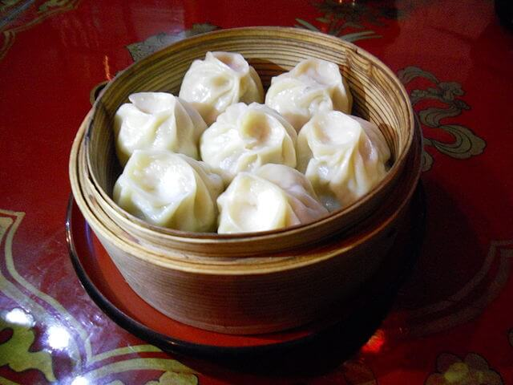

How to Make BUUZ!
WHAT IS BUUZ?
 Buuz are a type of Mongolian steamed dumpling filled with meat.
On most public winter holidays including Tsagaan Sar and New Year Celebration, buuz are traditionally served. Buuz are prepared in the weeks before and left outside to freeze for a while to make it easier to store. A household that who has a family elder traditionally has to make more than one thousand buuz for their guests, while younger families make more than three hundred buuz during the Tsagaan Sar which is celebrated in January or February.
But many families serve buuz for regular meals too. And it is also offered at restaurants and small cafes in Ulaanbaatar and other Mongolian cities.
The ingredients of buuz are very simple includes flour, meat, onion, salt, cumin and warm water.
Make the Dough
Mix together the flour, salt and water in a medium sized bowl. Left it to rest for 15 minutes.
Make the Filling
Combine all ingredients in a bowl and mix until everything is well combined. Add some water, if required, to make the filling a little juicy.
PS: The dough can be filled with anything from savory meats to vegetables, cheese, fruits or even seafood.
Now it is time to make buuz!
Here goes the most interesting yet difficult part of making buuz.
- Cut the dough into 2 cm (1 inch) thick slices and roll the slices into circles and lightly dust with flour to avoid them sticking to each other. Make the center slightly thicker than the edge.
- Place one teaspoon of meat filling in the center of the circle and seal or pinch the edges with your fingers.
- Steam the buuz for 15 minutes. Open the lid and fan some air with the help of a light cutting board or newspaper, to give them a reddish glossy look.
There are many styles for pinching or sealing the buuz and here is the video which will help you to find out the perfect pinch for you.
Finally, Mongolians say bon appetit as SAIHAN HOOLLOOROI.
photo by Mizu_Basyo - Cooked by Mongolian Restaurant "Chinggis Khaan", Tokyo, JAPAN
CC BY-SA 3.0, Link
- steamed: cooked by using steam (from boiling water)
- dumpling: meat or something else, wrapped in dough and cooked either by steaming or boiling
- wheat: kind of grain used to make bread, cookies, etc
- dough: mixture of flour and liquid (water or milk)
- pinch: small amount of something held between a finger and thumb
- lukewarm: a little bit warm
- minced: food that is cut into very small pieces
- chopped: food that is cut into pieces
- savory: having a good taste
- dust: to cover something with a fine powder (of flour)
- slightly: very small amount
- steamed:
- dumpling: Бууз, банш
- dough: зуурсан гурил
- wheat: улаан буудай
- pinch: хавчих
- lukewarm:
- minced: татсан
- chopped: жижиглэсэн
- savory: амттай
- dust: тоос шороо
- slightly: бага зэрэг
Source: Translate.Google.com
- steamed: приготовленные на пару
- dumpling: Вареники
- dough: тесто
- wheat: пшеница
- pinch: щирок
- lukewarm: тепловатый
- minced: рубленый
- chopped: рубленый
- savory: острый
- dust: пыли
- slightly: чуть-чуть
Source: Translate.Google.com
- steamed: буылған
- dumpling: қайнатпа
- dough: қамыр
- wheat: бидай
- pinch: шымшу
- lukewarm: жылы
- minced: кесілген
- chopped: кесілген
- savory: дәмді
- dust: шаң
- slightly: аздап
Source: Translate.Google.com
- steamed: ตุ๋น
- dumpling: เกี๊ยว
- dough: แป้งโด
- wheat: ข้าวสาลี
- pinch: หยิก
- lukewarm: อุ่น
- minced: สับละเอียด
- chopped: หั่นแล้ว
- savory: เผ็ด
- dust: ฝุ่น
- slightly: เล็กน้อย
Source: Translate.Google.com